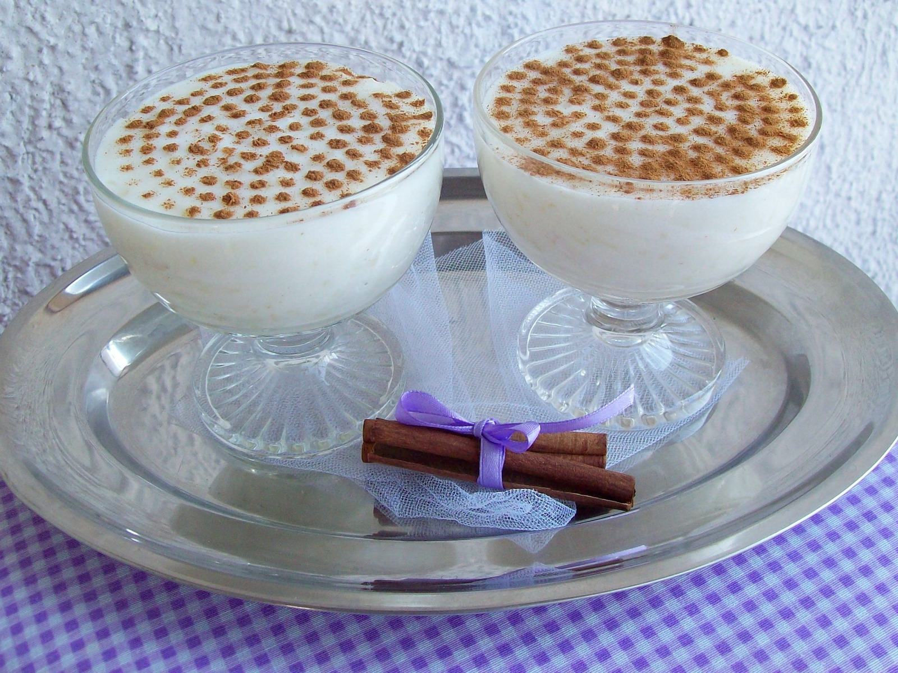

Sutlija

Opis
Sutlijaš ili sutlija jeste slatko jelo, tipično za područje Balkana i Turske. Porijeklo riječi sutlijaš vodi od turske riječi süt što na bosanskom znači mlijeko. Ovo jelo je prvobitno bilo rašireno u turskoj kuhinji, a do danas je održano i priznato kao mliječni desert širom svijeta. Osnovni sastojci su mlijeko, riža i šećer. Prema različitim varijantama spravljanja, njena konzistencija varira od područja do područja, kao i njen ukus.
Sastojci
- 250 g rize
- 1 litar vode
- soli kroz prste
- 200 g secera
- 800 ml mlijeka
- 1 kesica vanila secera
- 2 kasike gustina
- cimet
Koraci
- Rizu oprati te staviti u litar vode s malo soli da kuha na umjerenoj temperaturi i mijesati.
- Dodati oba secera i 700 ml mlijeka, promijesati i pustiti da kuha jos 10 minuta. U 100 ml mlijeka umjesati gustin pa dodati u rizu i jos malo mijesati i kuhati.
- Sutlija je gotova kad je smjesa malo gusca.
- Gotovu sutliju izliti u zdjelice i staviti u frizider da se ohladi te pokriti. Kad se ohladi umutiti slag, staviti na vrh sutlije i posuti cimetom.